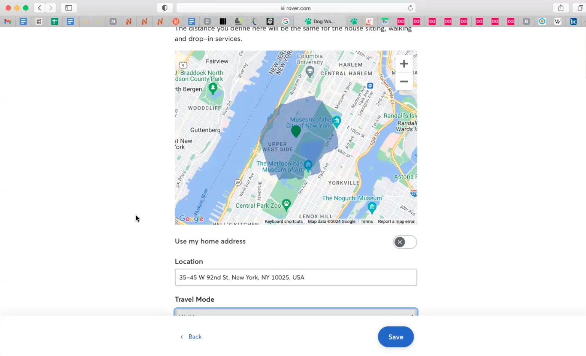
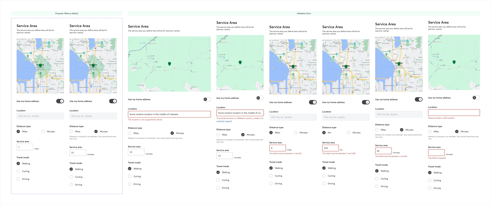

Rover · 2024–2025 · Search & Supply
SERVICE AREAS
TRAVEL DISTANCE
+4% bookings · +7% match quality · +5–6% revenue per searcher
Rover · 2024–2025 · Search & Supply
+4% bookings · +7% match quality · +5–6% revenue per searcher
match quality improvement · sitters closer to owners · more likely to accept
01 · Origin
Sitters historically set a simple circular radius — easy to build, blind to real geography. Sitters told us: "I'm getting requests within my radius that are practically impossible." This started at Maker Days: could we replace the circle with a polygon that reflected how sitters actually move through cities?
RESEARCH SESSION PROTOTYPE
Sitter sees existing circular radius, then it redraws as a travel-distance polygon using Mapbox isochrone API. Annotated: distance vs. time mode toggle; per-service area configuration. The "aha moment" of seeing a realistic shape for the first time.

02 · Research
In moderated sessions, sitters reacted to their areas being redrawn, adjusted distance/time and travel mode, and talked through how far they'd go for different service types.
Three design anchors: sitters think in miles AND minutes; irregular road-based shapes feel more intuitive; and they want different areas per service — wider for house sitting, local for walks.
SETTINGS UI — LIVE POLYGON MAP
Settings UI with live polygon updating as sitter adjusts distance/time and travel mode. Per-service tab structure (House Sitting, Drop-In Visits, Dog Walking). Side-by-side with old circular radius UI — before/after comparison.

03 · Impact
Two geographic A/B tests. Both waves showed better matching, better conversion, strong sitter adoption — so we committed to global rollout. Search-to-request improved +2–3%; search-to-book +1.6–2.8%. Match quality +7%. Revenue per searcher +5–6% in US markets.